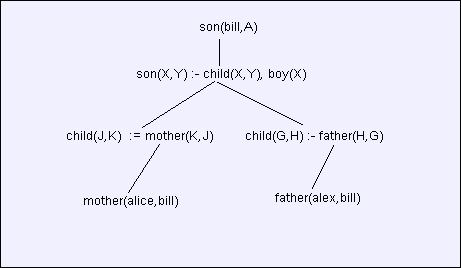

With “normal” programming languages a program consists of statements telling the computer how to solve a problem step by step. A Prolog program is different. Facts and rules define the boundarys for a solution (or set of solutions) to queries issued by the user and Prolog searches for solutions automatically.
This will become clearer with some examples. Suppose we have some facts about some relationships between people and some rules that let us infer more relationships. Facts might be statements like “Bill is a boy” and “Bills mother is Alice”. A rule might let us infer from these two statements that “Bill is Alice’s son” or that “Alice has children”.
In Prolog facts are represented in a syntax that will remind you of a function calls. To indicate that Bill is a boy we would create the following “term”.
boy(bill)It would also be possible to use the term “bill(boy)” but that wouldn’t be as useful because of the kind of questions we will want to ask. It is also important to remember that “boy(bill)” is NOT a function call but simply a statement about a relation. Also note that “bill” is not capitalized. This is because Prolog generally uses capitalized words as variables and lowercase words as constants. Bill is a constant just because Bill will always be Bill.
To represent the fact that Bill’s mother is Alice we could use the term
mother(alice,bill)indicating the “mother” relationship between alice and bill, that is “alice is the mother of bill”. It would be fine to write the term as “mother(bill,alice)” meaning “Bill’s mother is Alice” as long as we are consistent. Prolog does not deduce any deep meaning from our facts and rules. It just manipulates them to answer our questions.
Let’s stick with “boy(bill)” and “mother(alice,bill)”. Now we can create a rule that means “If X is the mother of Y, then Y is the child of X”. Here’s how such a rule might be written.
child(X,Y) :- mother(Y,X)where the “deep meaning” of child(X,Y) is “X is a child of Y”. Notice that X and Y are captialized indicating they are variables. Rules will generally have variables. Also notice that the order is reversed from our “if” statement above. The part to the left of the “:-” is called the head and the part to the right is the body whcih consists of one or more “goals” to be satisfied. Here is another rule.
child(X,Y) :- father(Y,X)and finally
son(X,Y) :- child(X,Y),boy(X)which says that X is the son of Y if X is the child of Y and X is a boy. Notice that the body has two terms separated by a comma. Both terms in the body must be satisfied to make the head term true.
A Prolog program consists of an ordered set of facts and rules in what is termed the “database”. Let’s play with the program a bit before looking at the Python code.
? boy(bill)
? boy(frank)
? mother(alice,bill)Here we have entered three facts into the database. Even now we can query them. A query is simply a term followed by the ‘?’ mark.
? boy(bob)?
? boy(bill)?
Yes
? boy(X)?
{'X': 'frank'}
{'X': 'bill'}
? mother(X,bill)?
{'X': 'alice'}
? mother(alice,X)?
{'X': 'bill'}
? mother(X,Y)?
{'X': 'alice', 'Y': 'bill'}Asking if bob is a boy gave no response (meaning No). Asking if bill is a boy gives the answer “Yes” since the rule “boy(bill)” is in the database. The query “boy(X)?” means we want Prolog to find all values of X for which boy(X) is a fact in the database. The query matches both “boy(bill)” and “boy(frank)” setting the variable X and reporting it for each. Now look at all the questions we can ask about the single fact that alice is the mother of bill. We can ask “Is anyone (X) bill’s mother?”, “Is alice the mother of anyone?” and even “Is anyone the mother of anyone else?”
When variables are set they are displayed in a format that should be familiar. You may have already guessed that our little Prolog interpreter stores variable settings in a Python dictionary,
Next let’s add the two rules above and extend our querys.
? child(J,K) :- mother(K,J)
? son(X,Y) :- child(X,Y),boy(X)
? son(X,alice)?
{'X': 'bill'}You might be wondering why I used variables “J” and “K” instead of “X” and “Y”. Either is fine. Like local variables in Python functions, the variables are local to the rule. But a little later I want to walk through a query in detail without the confusion of separate variables with the same name.
Now let’s add some information about dads.
? child(G,H) :- father(H,G)
? father(alex,bill)
? son(bill,X)?
{'X': 'alex'}
{'X': 'alice'}Let’s look more closely at how queries are processed in order to be ready to look at the Python code. The first thing to do is to nail down some terminology.
Terms like “boy(bill)” consist of a predicate (boy) and one or more arguments (bill). Each argument can be (for now!) a constant (lower case) or a variable (capitalized). A rule consists of a head term and a set of goal terms, each of which must be satisfied in order for the rule to succeed.
A query is a term matched against facts and rules in the database. With the database as we have loaded it, the query “boy(X)?” matches both “boy(bill)” and “boy(frank)” since X is a variable which can be set (unified) to either “bill” or “frank”. In general two terms will match if their predicates match and each of their arguments match. Arguments fail to match if they are different constants or variables set to different constants. Unset variables are set by this matching process. This unification process works in both directions; as queries are applied to rules and as results are returned. With the simple query “boy(bill)?” a match was found without needing to set any variables. As success is achieved, Prolog answers our query by showing how variables were set, or if no variables were set, simply with the word “yes”.
Let’s look a query in more detail. The following is a tree diagram showing how one query will spawn subqueries with constraints imposed by unification.

The results of the query “son(bill,A)?” will be “A=alice” and “A=alex”. But let’s take it step by step. We have a search tree and as we both descend and return (ascend) the tree, variables will be set through unification. The goal “son(bill,A)” spawns a subgoal “son(bill,Y) :- child(bill,Y), boy(bill)” where we have just set the variable X to bill. Next “child(bill,Y)” will spawn “mother(K,bill)” and “father(H,bill)”, setting variables J and G. “mother(K,bill)” finds a solution, setting k to “alice”. Now we ascend the tree, setting Y to “alice” and resuming the goal “son(bill,Y) :- child(bill,alice), boy(bill)” to attack the second part “boy(bill”. This succeeds (no variables set) and we hit the top of the tree setting A to “alice”. Then we descend again to find “alex” as a second answer to the query.
Having walked through a non trivial example, we’re now in a position to see how the two pages of code come together. Click here to access the Python and perhaps get a printout. Since I’ll refer to line numbers in the code it might be most convenient to have it in a text editor where navigation by line number is easy.
In the Python code terms and rules are represented by classes which really just hold their attributes. They each support just two methods, an initializer to compile a string representation of the term or rule the __repr__ method to display it.
Let’s play with the Term class.
>>> import prolog1 as prolog
>>> a = prolog.Term("mother(alice,bill)")
>>> a
mother(alice,bill)
>>> a.pred
'mother'
>>> a.args
['alice', 'bill']Here the __init__ method (line 16) has compiled the string “mother(alice,bill)” into a Term instance with a predicate and arguments. These are represented by Python strings. The __init__ method uses the ‘split’ function in the string module to split fields on ‘(’ or ‘,’ characters. The input string has had all whitespace removed. (line 64)
Let’s try a compilation of a rule
>>> b = prolog.Rule("son(X,Y):-mother(Y,X),boy(X)")
>>> b
son(X,Y) :- mother(Y,X),boy(X)
>>> b.head
son(X,Y)
>>> b.goals
[mother(Y,X), boy(X)]
>>>A rule is made up of a head term and a list of goal terms. In the __init__ function (line 27) ‘split’ is again used to cut up the pieces. However re.sub first changes “son(X,Y):-mother(Y,X),boy(X)” to “son(X,Y):-mother(Y,X);boy(X)” so that terms in the body can be easily split around the ‘;’ character.
Let’s look at the ‘unify’ function now (line 92). ‘Unify’ takes four arguments; a source term and environment, and a destination term and environment. If unification is successful the destination environment may be updated. Both environments are just dictionaries with variable bindings. Unify will return 1 if successful, otherwise 0.
The code should be straight forward, although it will not stay so simple in the later versions of our program as the definition of a term becomes more general. Notice the use of the dictionary get method to try to resolve a variable in its own environment. If the variable is not set, “get” will return None, which can indicate permission to set the variable.
>>> from prolog1 import *
>>> unify(Term("boy(bill)"),{},Term("boy(frank)"),{})
0
>>> e = {}
>>> unify(Term("boy(bill)"),{},Term("boy(bill)"),e)
1
>>> e
{}Here we can see that different terms do not unify but two copies of the same term do. Since there were no variables nothing was set in the destination environment ‘e’.
Let’s try something a little more complex.
>>> e = {}
>>> unify(Term("boy(bill)"),{},Term("boy(X)"),e)
1
>>> e
{'X': 'bill'}This time the variable X is set in the destination environment. If we now try..
>>> e = {'X': 'bill'}
>>> unify(Term("boy(frank)"),{},Term("boy(X)"),e)
0
>>> e
{'X': 'bill'}It fails because X was already set to ‘bill’. Source arguments may also be variables. Let’s look at a couple of situations.
>>>
>>> e = {}
>>> unify(Term("boy(G)"),{},Term("boy(X)"),e)
1
>>> e
{}Here unification succeeded but the variable X was not set since G has not yet been set. However if we do set G then X will be set.
>>> e = {}
>>> unify(Term("boy(G)"),{'G':'frank'},Term("boy(X)"),e)
1
>>> e
{'X': 'frank'}A Goal object is a bit of a misnomer but I can’t think of any better name. A goal is a rule, some of whose subgoals may have been matched and variables set. In the tree diagram above, each branch and node represents a goal. Except for our original query, each goal has a parent goal. The attributes of a Goal object are the rule, parent, environment and an index which indicates which subgoal of the rule needs to be matched next.
When a Goal object is created (line 43) it is vital that its environment is completely independent of another goal. We don’t want to be sharing dictionaries here! That’s why copy.deepcopy() (line 50) is used to create a completely independent environments.
Let’s look at the search function next. Search will work with a stack of goals. Our query (a term) is converted into a rule that then is used to create a Goal object that is in turn used to initialize the stack. (line 117)
Until the stack is empty goals are popped off the top and matched to facts and rules in the database (line 136). When all goals in a rule succeed the parent goal is resumed, actually a copy is stacked anew where it was left off. Where a goal requires a rule in the database to be satisfied, a child goal is started. In both cases unification is applied to make (or update) the environment and the new goal is stacked for processing.
Whenever the original goal (no parent) is found, results are printed (line 123). If variables have been set, they are output. Otherwise the program simply replies “Yes”.
Now, you may be wondering (and probably should be!) why we need a stack for processing. Why not instead simply make “search” a recursive function? Well, it won’t work. In fact, I tried that at first. But the nature of prolog is that a “call” to “search” would need to “return” multiple times (or none), once for each solution found. Our Python functions just can’t do that.
This program is set up to process statements (and queries) from any files on the command line and then to interact in the same fashion with the user. Interaction with the user may be turned off by using ‘.’ (meaning STOP) as the last filename. Within a file lines starting with ‘#’ are comments. The command “trace=1” will turn on the trace feature. When trace is on a line is printed by “search” each time a goal is stacked or popped from the stack. The command “dump?” will display the database. Otherwise if the line ends with a ‘?’ it is assumed to be query; if not, it must be a rule or fact to be added to the database. Rules and facts may optionally end with a period.
Here is a non-trivial example that shows the trace feature.
? child(X) :- boy(X).
? child(X) :- girl(X).
? girl(alice).
? boy(alex).
? trace=1.
? child(Q)?
search child(Q)
stack Goal 1 rule=got(goal) :- child(Q) inx=0 env={}
pop Goal 1 rule=got(goal) :- child(Q) inx=0 env={}
stack Goal 2 rule=child(X) :- boy(X) inx=0 env={}
stack Goal 3 rule=child(X) :- girl(X) inx=0 env={}
pop Goal 3 rule=child(X) :- girl(X) inx=0 env={}
stack Goal 4 rule=girl(alice) inx=0 env={}
pop Goal 4 rule=girl(alice) inx=0 env={}
stack Goal 3 rule=child(X) :- girl(X) inx=1 env={'X': 'alice'}
pop Goal 3 rule=child(X) :- girl(X) inx=1 env={'X': 'alice'}
stack Goal 1 rule=got(goal) :- child(Q) inx=1 env={'Q': 'alice'}
pop Goal 1 rule=got(goal) :- child(Q) inx=1 env={'Q': 'alice'}
{'Q': 'alice'}
pop Goal 2 rule=child(X) :- boy(X) inx=0 env={}
stack Goal 5 rule=boy(alex) inx=0 env={}
pop Goal 5 rule=boy(alex) inx=0 env={}
stack Goal 2 rule=child(X) :- boy(X) inx=1 env={'X': 'alex'}
pop Goal 2 rule=child(X) :- boy(X) inx=1 env={'X': 'alex'}
stack Goal 1 rule=got(goal) :- child(Q) inx=1 env={'Q': 'alex'}
pop Goal 1 rule=got(goal) :- child(Q) inx=1 env={'Q': 'alex'}
{'Q': 'alex'}All of the code files can be found in prolog1.zip
The follow-up section prolog (lists and better unification) are under renovation.
If you have comments or suggestions You can email me at mail me
Copyright © 2014-2021 Chris Meyers and Fred Obermann
…